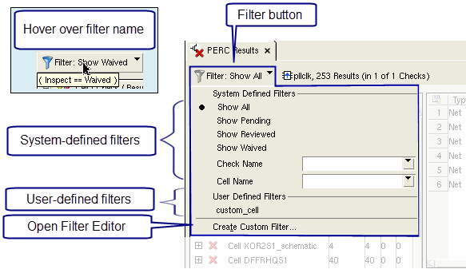
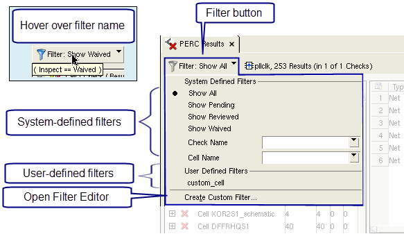

Applying Result Filters in Calibre RVE for PERC
Results
filters are selected from a list of system-defined and user-defined
result filters.
Prerequisites
A Calibre PERC or Calibre PERC LDL results database open in Calibre RVE for PERC.
Procedure
- Click the filter button
 to display filter
selections in a dropdown list, as shown in the following figure.Figure 1. Results Filter Menu
to display filter
selections in a dropdown list, as shown in the following figure.Figure 1. Results Filter Menu
Results
Only results that satisfy the filter are shown in the Calibre RVE display. The following items are true when a filter is applied:
When highlighting results with a filter applied, only the filtered results are highlighted.
The applied filter is associated with the database and applied the next time the database is opened.